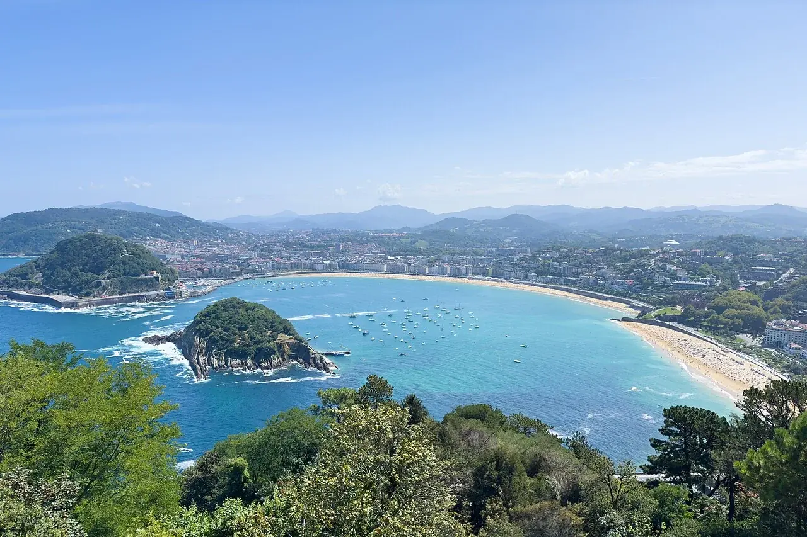

La Concha
Saint-Sébastien, Espagne · paddle, kayak, baignade

Une baie en croissant, l’île de Santa Clara et les façades de Saint-Sébastien en arrière-plan. La Concha permet de combiner une étape en ville avec une sortie sur l’eau.
- Lieu
- Saint-Sébastien, Espagne
- Niveau
- Variable selon les conditions
- Activités
- paddle, kayak, baignade
- Type d'eau
- Mer / océan
- Coordonnées
- 43.31, -1.99 (position approximative du secteur)
Ouvrir dans Ocean Buddy Télécharger sur l'App Store
Source : Wikipédia · géographie du lieu.